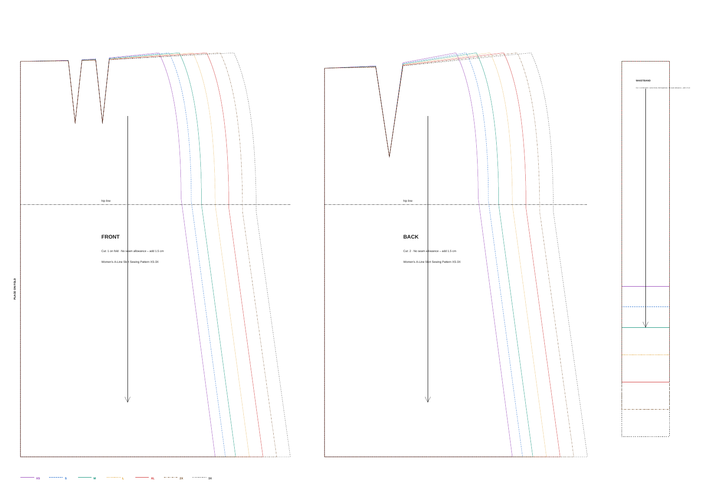

Women's A-Line Skirt Sewing Pattern XS-3X
Nested sizes XS–3X · no seam allowance · A4/Letter or A0

Size chart (body measurements)
| Size | Bust | Waist | Hip | Hip depth |
|---|
| XS | 80 cm / 31.5" | 62 cm / 24.4" | 88 cm / 34.6" | 20.0 cm |
| S | 86 cm / 33.9" | 68 cm / 26.8" | 94 cm / 37.0" | 20.5 cm |
| M | 92 cm / 36.2" | 74 cm / 29.1" | 100 cm / 39.4" | 21.0 cm |
| L | 100 cm / 39.4" | 82 cm / 32.3" | 108 cm / 42.5" | 21.0 cm |
| XL | 108 cm / 42.5" | 90 cm / 35.4" | 116 cm / 45.7" | 21.5 cm |
| 2X | 116 cm / 45.7" | 98 cm / 38.6" | 124 cm / 48.8" | 22.0 cm |
| 3X | 124 cm / 48.8" | 106 cm / 41.7" | 132 cm / 52.0" | 22.0 cm |
Ease: 4 cm (1.5 in) at the hip, 1 cm at the waist. Hem flare 5 cm per side seam. Length 58 cm (23 in).
Before you start
- A classic knee-length A-line skirt with darts, a straight waistband and a centre back zip. Length 58 cm (23 in).
- No seam allowance included: add 1.5 cm (5/8 in) to all edges and 3 cm at the hem.
- Good fabrics: cotton twill, light denim, linen, corduroy, wool blends.
Printing
- Print at 100% / actual size. Check the test square (5 cm / 2 in) on page A1.
- Trim and tape the pages by their labels, or print the A0 file at a copy shop.
Choosing your size
Choose by your hip measurement. If your waist is a different size, blend the lines between hip line and waist. The waistband length follows your waist size.
You will need
- Fabric: 1.2 m (1.3 yd) of 140 cm (55 in) wide fabric for sizes XS–L, 1.5 m (1.7 yd) for XL–3X
- 18–20 cm (7–8 in) invisible or regular zip
- Light fusible interfacing for the waistband, 1 button or hook
Sewing steps
- Interface half of the waistband.
- Sew the darts and press them toward the centre.
- Sew the centre back seam up to the zip mark, insert the zip.
- Sew the side seams, finish all raw edges.
- Sew the waistband to the skirt, fold it, close it by hand or stitch in the ditch, add the button.
- Try it on, mark the hem, press up 3 cm and stitch.
Fitting tips
- Sew a quick test version first if you can.
- Waist gaping: take the darts in a little. Hip tight: let out the side seams.
- Want more swing? Add 2–3 cm more flare at the side hem.
© AureliaVenn · Personal use and small-batch handmade sales. Please don't share or resell the pattern files. Drafted with the help of software from a standard size chart.